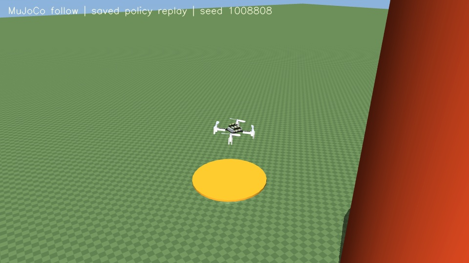

01 — TRAINED SCENE
原有工廠 / Flight Hall
TUM 飛行實驗室 · 98,372 粒 Gaussian。已完成此頁嘅單障礙導航測試；互動檢視直接讀取作者原始來源，首次約 6.69 MB。
進入工廠 3D 場景 ↗由原有工廠 3D Gaussian Splatting 場景，走到可重播、可核對嘅導航結果。呢度係已保存嘅實驗紀錄，隨時用另一部電腦或手機打開。

載入已保存結果…
兩段影片係額外嘅 MuJoCo 觀察相機，並非策略輸入嘅 3DGS 相機畫面。佢哋重播同一個 seed，無再訓練或更改物理設定。
| Seed | 到達 | 碰撞 | 時間 | 目標距離 | 結束原因 |
|---|
TUM 飛行實驗室 · 98,372 粒 Gaussian。已完成此頁嘅單障礙導航測試；互動檢視直接讀取作者原始來源，首次約 6.69 MB。
進入工廠 3D 場景 ↗校園實景 · Hite Spive · CC BY 4.0。預設 150 萬粒／84 MB 預覽，可手動切換 900 萬粒／288 MB 完整密度。比例及碰撞未校準，尚未訓練。
進入校園 3D 場景 ↗模型使用凍結嘅 Flyvis 視覺電路，加上一個經訓練嘅動作決策網絡。策略另外收到理想相對目標、速度及前一步動作；障礙座標並無輸入策略，測試時亦無示範控制器。
範圍係同一個靜態工廠、一個人工擬合嘅圓柱碰撞代理，以及固定高度／方向嘅平面導航。未驗證全場碰撞、校園飛行、戶外長距離、真機安全或 4DGS。固定首幀特徵嘅對照顯示時序視覺敏感度，並唔證明模型已學識絕對距離。
呢頁係靜態閱讀版：影片、軌跡、JSON 同場景瀏覽可以公開查看；訓練仍喺本機運行。查看發佈檔案清單。